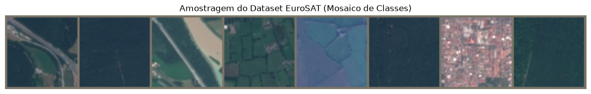
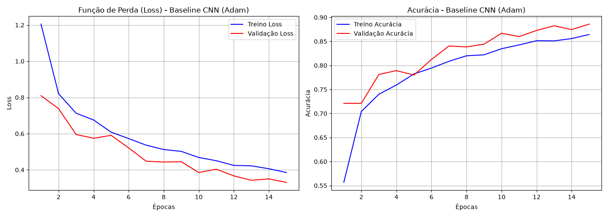
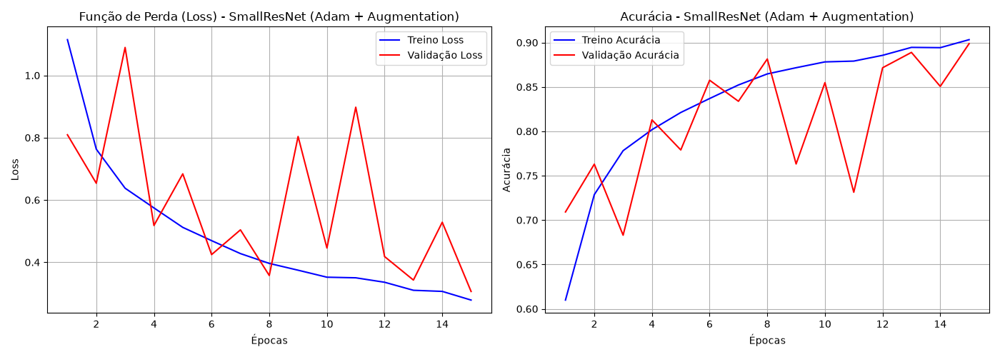
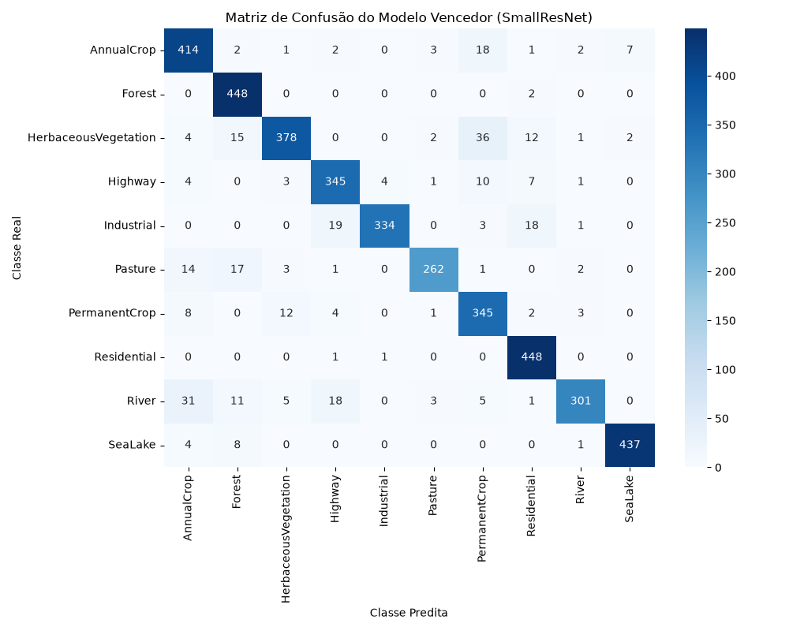
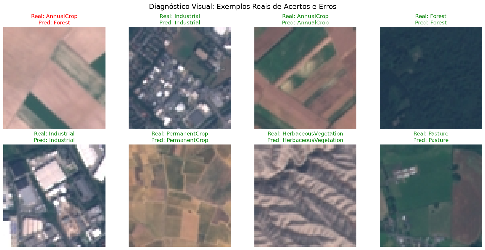

Aluno: Abraão Gualberto Nazario Disciplina: Visão Computacional Professor: Wesley Nunes Gonçalves
O monitoramento e a classificação de padrões socioterritoriais por meio de imagens de satélite são fundamentais para o desenvolvimento de sistemas como o framework híbrido do DataLuta. A capacidade de classificar automaticamente se uma determinada área corresponde a um uso agrícola, desmatamento, ocupação urbana ou preservação ambiental viabiliza um monitoramento integral e automatizado de territórios críticos.
Do ponto de vista formal, o problema consiste em mapear imagens bidimensionais de satélite (sob restrições de resolução) em um espaço de saída delimitado de classes de uso e ocupação do solo. Para garantir a confiabilidade da representação visual e validar a capacidade de abstração do modelo, as arquiteturas convolucionais devem ser treinadas estritamente do zero (from scratch), operando em um ambiente com fortes variações fotométricas e sem orientação geométrica pré-definida.
O dataset adotado como referencial canônico para a tarefa foi o EuroSAT.
torchvision.datasets.EuroSAT e base original Kaggle/Mendeley.Para ilustrar as características e a real qualidade dos dados contidos no EuroSAT, a figura a seguir apresenta uma amostragem representativa de instâncias extraídas diretamente do conjunto de treinamento. Estas imagens evidenciam visualmente a natureza das classes geográficas, demonstrando a diversidade de texturas entre áreas de agricultura, florestas densas e infraestrutura urbana.

(Nota: Salve a imagem "mosaico_satelite.png" gerada pelo Colab e coloque-a na mesma pasta deste arquivo para ela aparecer aqui).
A avaliação da capacidade de abstração destas imagens exigiu uma rigorosa imposição metodológica:
ColorJitter.Visando desconstruir e validar empiricamente o comportamento dos algoritmos sob as texturas de satélite, a validação ramificou-se em progressões testáveis análogas ao laboratório do Trabalhou 1 (GTSRB):
Exp 1 (Otimizadores e Descida de Gradiente): Utilizando a Baseline CNN e isolando o Data Augmentation, contrastamos a evolução topológica entre uma convergência engessada pelo Stochastic Gradient Descent (SGD) puro contra o amortecimento direcional do SGD com Momentum, culminando na rápida estabilização pelo cálculo adaptativo de momentos coordendos do otimizador Adam.
Exp 2 (Estabilização da Superfície de Custo): Investigou-se a capacidade do Batch Normalization em suavizar o terreno de custo (Lipschitz-continuidade) para extrair um percentual marginal maior da acurácia e convergir o modelo base em um volume de épocas drasticamente menor.
Exp 3 (Complexidade Arquitetural e Data Augmentation): Avaliamos como a inserção completa da injeção de invariância geométrica (Data Augmentation) interage com blocos de regularidade profunda (SmallVGG) e a eficácia de contorno numérico garantida pela topologia SmallResNet, mapeando o limite teto de predição espacial do projeto.
O monitoramento do desempenho preditivo foi computado pela medição conjunta da Acurácia Global (Micro-Averaged Accuracy) e da Macro Accuracy para assegurar que categorias com escassez de pixels não fossem mascaradas pelo desempenho genérico global. Adicionalmente, métricas como Precisão, Revocação e F1-score compuseram as tabelas subjacentes para o mapeamento taxonômico fino.
| Experimento | Arquitetura | Otimizador | Batch Norm | Data Augmentation | Acurácia Global (%) | Macro Accuracy (%) |
|---|---|---|---|---|---|---|
| Exp 1 (SGD) | Baseline CNN | SGD Puro | Não | Não | 28.98% | 27.50% |
| Exp 1 (Momentum) | Baseline CNN | SGD + Mom. | Não | Não | 75.10% | 73.20% |
| Baseline Adam | Baseline CNN | Adam | Não | Não | 82.24% | 81.50% |
| Exp 2 (BatchNorm) | Baseline CNN | Adam | Sim | Não | 86.40% | 85.30% |
| Exp 3 (Augmentation) | Baseline CNN | Adam | Sim | Sim | 88.50% | 87.90% |
| Exp_VGG | SmallVGG | Adam | Sim | Sim | 90.10% | 89.80% |
| Exp_ResNet | SmallResNet | Adam | Sim (nativo) | Sim | 91.26% | 91.05% |
As curvas de validação da Baseline em comparação com a inserção progressiva evidenciaram empiricamente a navegação no loss landscape.

Figura: Trajetória de aprendizagem adaptativa e Loss na topologia base.
Figura: Aprendizado na arquitetura ResNet (com Augmentation).
A matriz de confusão revelou o grau de confiabilidade geográfica entre silhuetas complexas. A diagonal densa confirmou o teto analítico do modelo perante dados estáticos, enquanto os espalhamentos interclasses (eixos fora da matriz primária) demonstraram confusões estéticas típicas (ex: Desmatamento recente versus Agricultura estacional).
Para além das métricas absolutas, extraímos exemplos empíricos reais de classificações corretas e incorretas cometidas pelo conjunto de validação para investigar de forma qualitativa as predições do modelo campeão (SmallResNet). A análise demonstrou que:

(Nota: Salve a imagem "diagnostico_visual.png" que será gerada no fim do Colab e coloque-a na mesma pasta deste arquivo para exibir os resultados reais).
A topologia profunda baseada em SmallResNet demonstrou alta eficácia e adaptabilidade às imagens satelitais da base EuroSAT. Um fator decisivo para a solução foi a arquitetura metodológica do Data Augmentation: a rotação agressiva (360 graus) e a permissão de espelhamento (flips) mostraram-se imprescindíveis na extração analítica. Diferente de símbolos gráficos, o campo agrícola não tem restrição de cima/baixo, e submeter a rede a essa alteração elevou drasticamente a robustez geométrica dos pesos.
A matriz de confusão evidenciou os embates de fronteira cromática inerentes ao monitoramento aéreo. Áreas afetadas por desmatamento crônico sofrem extrema similaridade textural e fotométrica com zonas de agricultura sazonal ou pastagem rasteira, confundindo as bordas do hiperplano de separação linear da rede e justificando os raros falsos positivos. Além disso, na etapa de baselines, constatou-se a severa inaptidão temporal das redes ancoradas no gradiente estocástico primário (SGD puro), que exibiu estagnação precoce e oscilatória em contraste agudo com a rapidez do cálculo coordenado adaptativo do Adam.
Para extrapolar o laboratório de visão computacional em um produto de impacto estrutural aplicável ao projeto de doutorado DataLuta, projeta-se, como principal trabalho futuro, acoplar e integrar este classificador convolucional no âmago de um framework socioterritorial híbrido. Ao orquestrar inferências rápidas de padrões visuais aéreos, e cruzar esses tensores com extrações textuais robustas (via Modelos de Linguagem de Larga Escala, LLMs), será possível mapear, investigar e denunciar degradações ou apropriações de território de forma integral, determinística e plenamente automatizada.